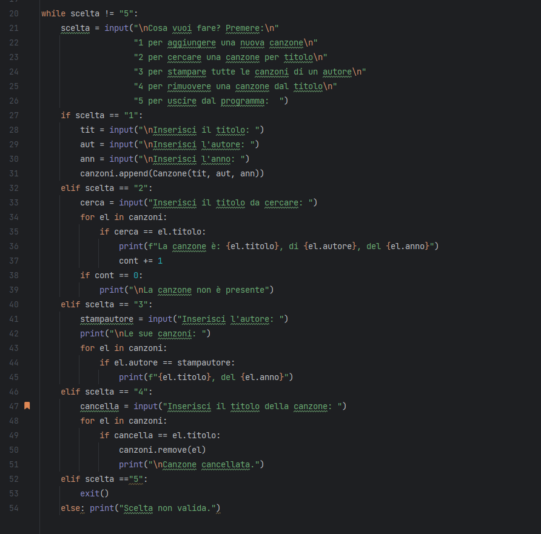

Il progetto gestisce un archivio di canzoni.
La struttura si basa su una classe Canzone che contiene Titolo, Autore ed Anno di pubblicazione e restituisce la
stringa con i dati completi del libro.
L'utente, tramite console, può scegliere di aggiungere, cercare o rimuovere un titolo, oltre a stampare tutte le
canzoni presenti in lista.
L'elenco di opzioni è implementato attraverso un ciclo While.
